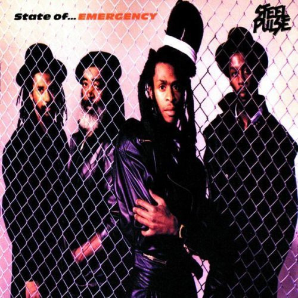

CD
State Of Emergency
Steel Pulse
Media: VG+ · Sleeve: VG+
CA$15.50
Discogs SuggestedCA$17.44
Discogs MedianCA$17.44
Discogs HighCA$17.44
- Physical Copy ID
- BB-CD-2814
- Year
- 1988
- Label
- MCA Records
- Catalog #
- 255 620-2 (MCAD-42192)
- Country
- Europe
- Genre / Style
- Reggae · Reggae-Pop, Roots Reggae